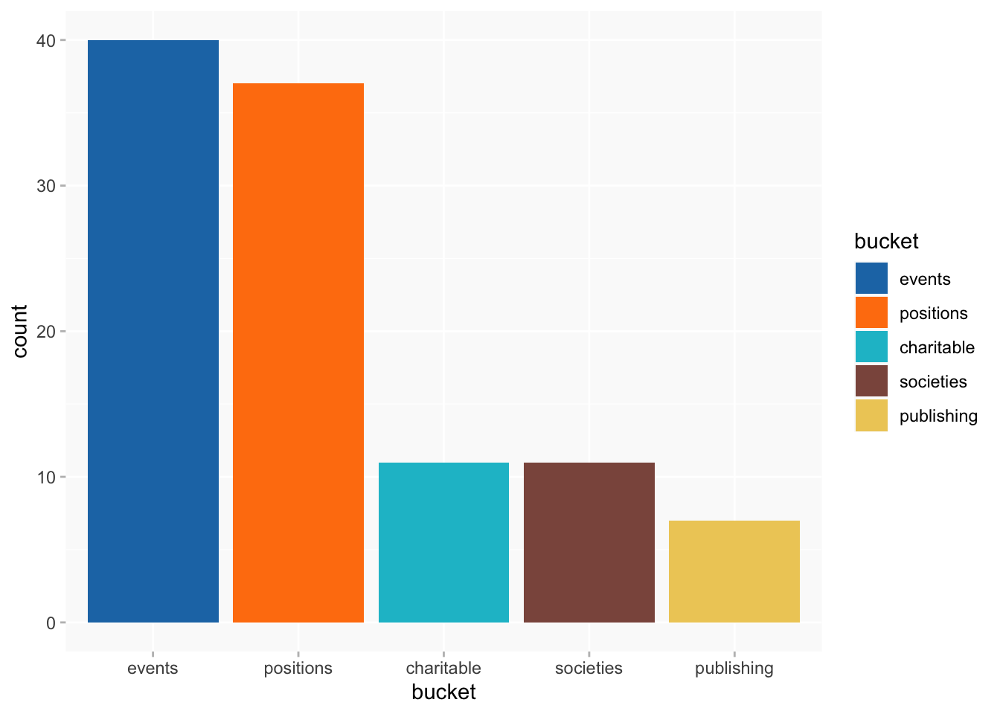
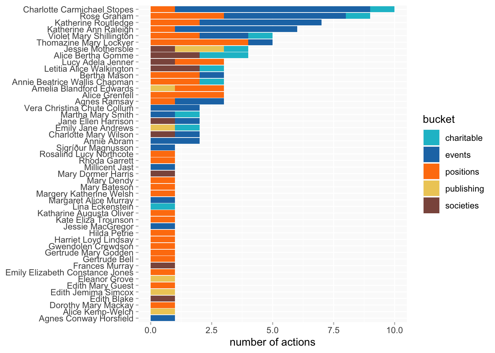
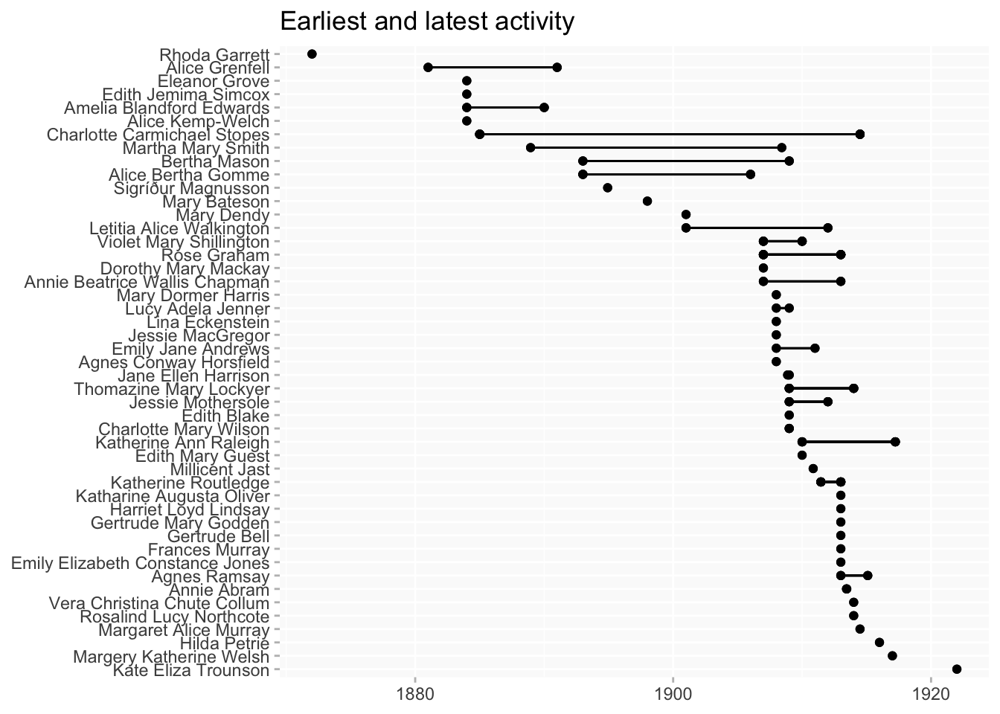
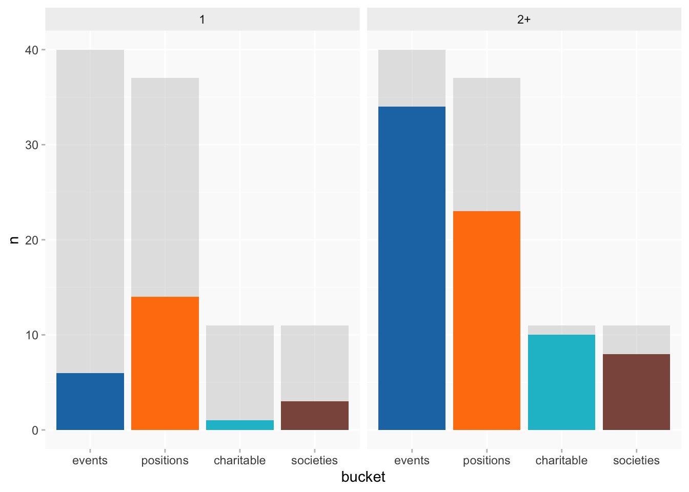
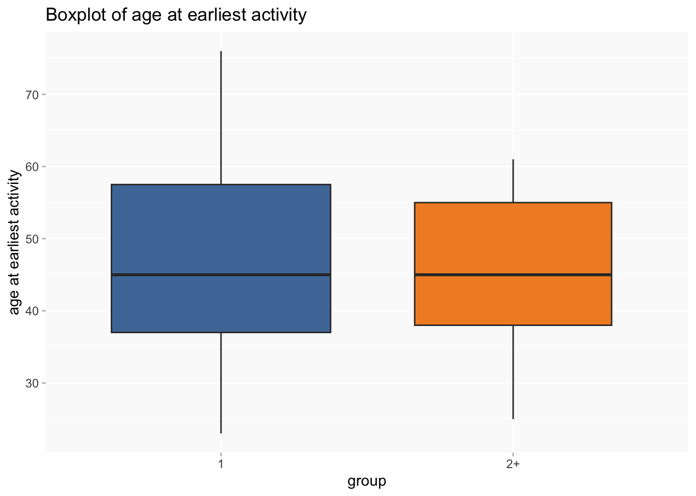
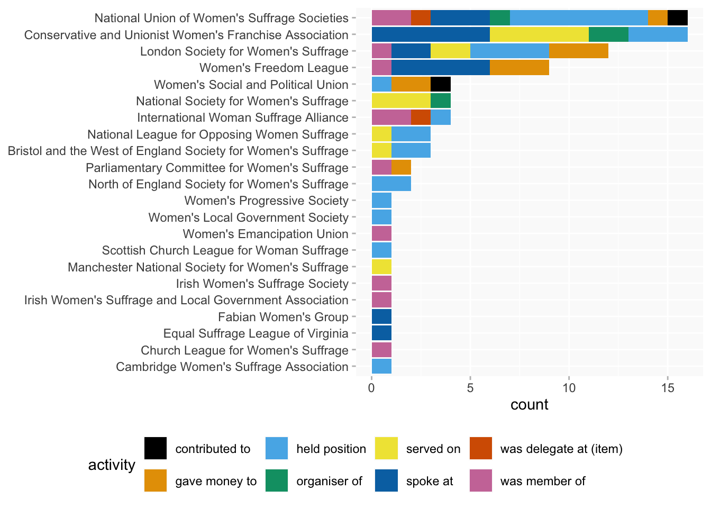
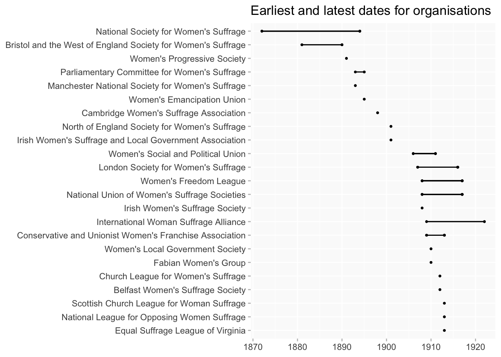

Suffrage activities
ppa
Visualisations of suffrage activity in the BN database across time
Wikibase queries
- Dates section
- Suffrage-related activities
Notes
Amara and I are thinking about how women’s involvement in organisations tagged in the database as instances of suffrage activity maps other things they were doing, and what is going on in terms of suffrage activities we’ve picked up on across time. We’re not 100% sure what we want to do with this as yet, but as a starter to help us, do you think it might be possible, please, to do some visualisation that pulls together all flagged suffrage activity in our database across time? (We’ve also realised that some unflagged suffrage activity of event types has crept into the database so will aim to fix this, though we think all suffrage groups we know of are flagged.) Please note that we have also flagged anti-suffrage activity as suffrage activity, so preserving names of distinct suffrage orgs in whatever you come up with might be helpful.
Nearly all the suffrage activities in the database are dated, though charts ignore differences in kinds of date - positions are usually at year level while events are more short term. (Though they’re all point in time dates, I think, rather than start/end, so presumably none were of more than a year duration.)
TODO
locations? will need more complex queries (which I’ll work out for the lecturing post first)
Types of activity
[“money” is an invented bucket for “gave money to”, which doesn’t seem to be in an existing PPA bucket; only a couple of them]
A beeswarm of activity types grouped by PPA buckets. [excluding the buckets with only one or two instances]
- most activity (unsurprisingly!) is between 1908 and 1913 (about 2/3 of dated activities)
- underlining the intensity of suffrage politics in that period,
eventsare particularly clustered there;positionsalso peak in the same period, but they’re more spread out.
events positions societies money
"#1f77b4" "#ff7f0e" "#8c564b" "#17becf" Women
32 women represented here; 12 have more than one activity recorded.

Beeswarms don’t work well in this case because the concentration of activity in a small number of years makes it impossible to avoid them overlapping too much to make any sense. Instead I’ve tried out “barcode” charts to chart timelines.
Each vertical bar represents one date for which a suffrage activity is recorded (making no distinction between types of date). Unlike a beeswarm it won’t show every single data point if there’s more than one on the same date, but it’s possible to make more data points visible than with chunkier shapes like dots or squares, and it will indicate more intense clusters of activity (both horizontally, for individuals, and vertically, for the group as a whole).
- order by date of earliest activity
- order by date of birth
If only a single event needs to be plotted, a lollipop chart is also quite effective.

And a dumbbell plot for the earliest and latest activities by each woman. There isn’t very much overlap (among women with more than 1 activity) between women who were active before 1908 and those who started 1908 or later. (But is this an absence, or just absence of data?) I’m not familiar enough with the historiography to know whether this might be expected; if not, handle with caution.
Separating out women with at least 2 activities
- ordered by date of earliest activity

There is a noticeable difference in activity types between the women with 1 activity and those with 2+. Going back to the earlier chart of PPA bucket counts, this version separates out the two groups but also shows the totals in light grey in the background - positions and societies are both quite evenly split between group 1 and group 2, but the 2+ women are much more involved in events (= mainly spoke at).

Additionally, on average members of the 2+ group were several years younger than the 1 group at the time of their first recorded suffrage activity; median age at earliest activity for 2+ is 42 and for 1 is 46.
But NB that this is only true of “early starters” (pre 1908) and the numbers are small (6 early starters and 5 later starters). So this needs to be treated with caution.

Lollipop chart of ages at earliest activity, sorted by date of the earliest activity, and coloured by group (1 or 2+ activities).

Organisations and types of activity
18 distinct organisations (not all activities are associated with a named organisation).
[label partly cut off in legend = “was member of”]

There’s even less overlap between pre-1908 and 1908- organisations than for the women themselves. (It looks as though local and regional organisations are only present in the earlier period.)